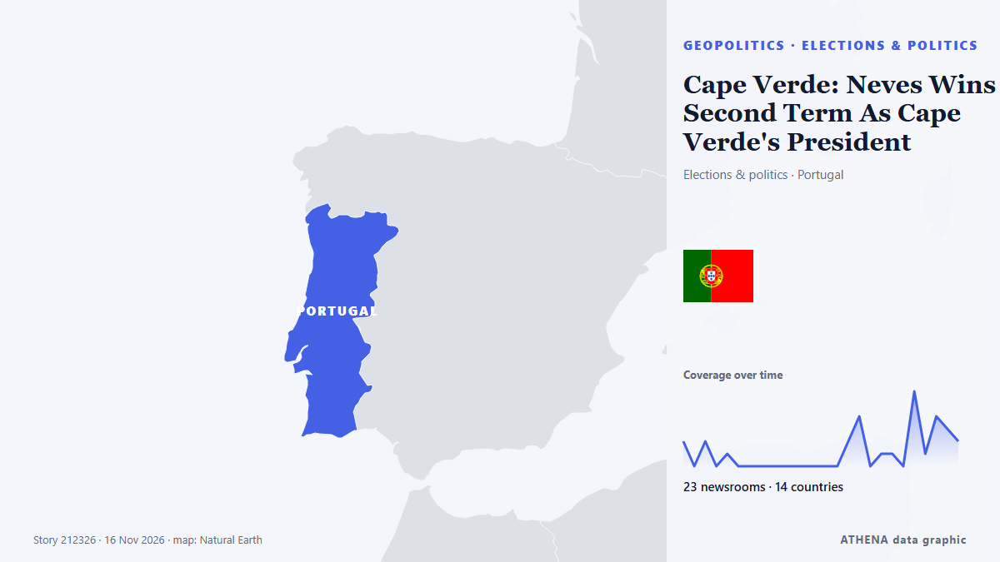

Cape Verde: Neves Wins Second Term As Cape Verde's President

[RFI] José Maria Neves has won a second five-year term as Cape Verde's president, according to provisional results from Sunday's election. from AllAfrica
Reported independently by 23 outlets in 14 countries since 13 Nov, first by The Straits Times; coverage is fading. ATHENA rates the risk low (1.6/10), driven mainly by the severity of the harm described and its geographic and sector reach. Confidence is 91% (high), with 23 independent outlets corroborating it and an average source reliability of 76%. Outlets by country: France (5), Singapore (3), Malaysia (3). Coverage: 13 Nov to 16 Nov, 76 hours.
Why it matters: Security and diplomatic developments can shift alliances, trade and markets well beyond the countries directly involved.
What changed: 19 new reports from 18 outlets in the 24 hours to 16 Nov.
First reported as: Cape Verde president eyes new term as party builds on legislative win
AutomatedSelected, grouped and scored by ATHENA's published method from 22 independent outlets. The headline is the outlet's own; ATHENA's sentences follow fixed patterns - no generative AI writes them. How it works →
How to read this page
- What you are reading
- 23 outlets in 14 countries reported this event. The reports below are listed in the order they appeared; each headline opens the original article. ATHENA writes none of the reports.
- Our reading
- For the record — The reports describe a completed, domestic, commercial or personal matter. We list it so you can see who reported it and when. We are not tracking a risk of wider conflict here.
- How much evidence
- Fair Several independent outlets agree, but the picture could still change.
After repeats, off-topic items and stale reports are removed, 19 of the 30 listed reports are counted; 100% of the headlines match the event.
- What this does not mean
- ATHENA measures how an event is reported, not whether it is true. This is not a forecast, a judgement on who is right, or advice.
- What would change it
- Reports from other independent outlets showing a different development, or a firm confirmation or denial from an official source.
Reading R2 · refreshed with every update of this page. ATHENA has not yet published a track record for these readings; when it does, it will be linked here.
At a glance
Selected, scored and written by ATHENA's published methodology. No editor intervenes in individual events. How this is produced ›
| 13 Nov 07:09 UTC | 2 |
|---|---|
| 13 Nov 10:09 UTC | 0 |
| 13 Nov 13:09 UTC | 2 |
| 13 Nov 16:09 UTC | 0 |
| 13 Nov 19:09 UTC | 1 |
| 13 Nov 22:09 UTC | 0 |
| 14 Nov 01:09 UTC | 0 |
| 14 Nov 04:09 UTC | 0 |
| 14 Nov 07:09 UTC | 0 |
| 14 Nov 10:09 UTC | 0 |
| 14 Nov 13:09 UTC | 0 |
| 14 Nov 16:09 UTC | 0 |
| 14 Nov 19:09 UTC | 0 |
| 14 Nov 22:09 UTC | 0 |
| 15 Nov 01:09 UTC | 0 |
| 15 Nov 04:09 UTC | 2 |
| 15 Nov 07:09 UTC | 4 |
| 15 Nov 10:09 UTC | 0 |
| 15 Nov 13:09 UTC | 1 |
| 15 Nov 16:09 UTC | 1 |
| 15 Nov 19:09 UTC | 0 |
| 15 Nov 22:09 UTC | 6 |
| 16 Nov 01:09 UTC | 1 |
| 16 Nov 04:09 UTC | 4 |
| 16 Nov 07:09 UTC | 4 |
| 16 Nov 10:09 UTC | 2 |
| 13 Nov 09:35 UTC | 0.0 |
|---|---|
| 13 Nov 21:37 UTC | 2.0 |
| 16 Nov 13:12 UTC | 1.6 |
Why these numbers
Importance
Risk
Confidence
The reporting — who reported it, and when
headline as published · opens the original- The Straits Times · SingaporeCape Verde president eyes new term as party builds on legislative win
- Free Malaysia Today · MalaysiaCape Verde’s president eyes new term as party builds on legislative win
- The Rio Times · BrazilCabo Verde Campaign Ends Before Sunday Vote
- Africanews (English) · AFRCape verde presidential election: Neves seeks second term
- Arab News · Saudi ArabiaCape Verde president eyes new term as party builds on legislative win
- ABC News (International) · United StatesCape Verde election could deliver first woman president since independence in 1975
- The Straits Times · SingaporeCape Verde votes for president with emigration in focus
- France 24 English · FranceCape Verde could make election history with first female president
- Euronews English · FranceCape Verde's President José Maria Neves re-elected, provisional election results show
- RFI English · FranceCape Verde votes for president, with incumbent favoured to win
- Al Jazeera English · QatarPolls open in Cape Verde in race with first female presidential candidate
- Africanews (English) · AFRPresidential polls open in Cape Verde with first female candidate
- Punch · NigeriaCape Verde votes as first female presidential candidate challenges incumbent
- New Straits Times · MalaysiaNeves secures re-election in Cape Verde presidential vote
- Free Malaysia Today · MalaysiaCape Verde’s president Jose Maria Neves re-elected
- Courthouse News · United StatesCape Verde election could deliver first woman president since independence in 1975
- Anadolu Agency (English) · TurkeyCape Verde's president leads reelection bid with nearly 64% of vote
- Daily Trust · NigeriaIncumbent favoured as Cape Verde votes for president
- Le Monde (English) · FranceCape Verde's President José Maria Neves re-elected
- The Rio Times · BrazilCabo Verde Re-Elects Its President Neves
- Korea Herald · South KoreaIn Cape Verde election, Neves seeks second term
- AllAfrica · AFRCape Verde: Incumbent Favoured As Cape Verde Votes for President
- The Straits Times · SingaporeCape Verde President Neves wins second term, challenger Rosa concedes defeat
- Club of Mozambique · MozambiqueCape Verde President Neves wins second term, challenger Rosa concedes defeat
- RFI English · FranceNeves wins second term as Cape Verde's president: provisional results
- DW English · GermanyCape Verde election: Jose Maria Neves set to win second term
- AllAfrica · AFRCape Verde: Neves Wins Second Term As Cape Verde's President
- ABC News (International) · United StatesCape Verde’s president is reelected for a second 5-year term, provisional results show
- China Daily — page reader · ChinaCape Verde's Neves secures second term with 63.8% of vote
- SABC News · South AfricaCape Verde President José Maria Neves secures a second five-year term